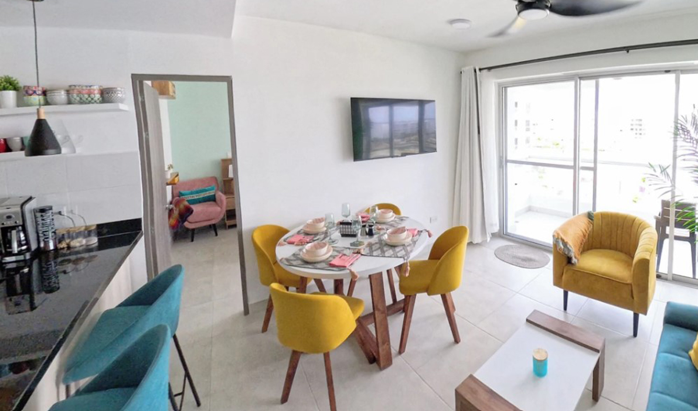

Disfruta de un elegante apartamento en el cuarto piso, con ascensor, ubicado en el exclusivo conjunto cerrado Castelo-Serena del Mar

Este espacioso y moderno hogar ofrece comodidad y estilo. La alcoba principal cuenta con una cama doble (tipo cama-nido), baño privado con ducha y un amplio closet tipo Walk-in

Además, el apartamento tiene 2 baños completos, cada uno con ducha de agua caliente para tu comodidad.

La segunda alcoba está equipada con dos camas, una de ellas tipo cama-nido, y un gran closet.

La cocina está completamente equipada con electrodomésticos como cafetera, microondas, tostadora y más, ideal para preparar tus comidas.

En la cómoda sala encontrarás un amplio sofá-cama y acceso al balcón privado, perfecto para relajarte y disfrutar del ambiente Cartagenero.
El moderno comedor tiene capacidad para cuatro personas, acompañado de tres sillas tipo bar para mayor comodidad.

El conjunto cerrado ofrece excelentes amenidades, que incluyen piscinas para adultos y niños, cancha de voleibol, vigilancia las 24 horas y mucho más.

Además, disfrutaras de una playa concesionada a tan solo 15 minutos, donde puedes hacer tu reserva fácilmente a través de una app.

A pocos pasos del apartamento encontrarás restaurantes, tiendas, droguerías y una vibrante vida nocturna, lo que te permitirá sumergirte en el encanto y la energía única de Cartagena.